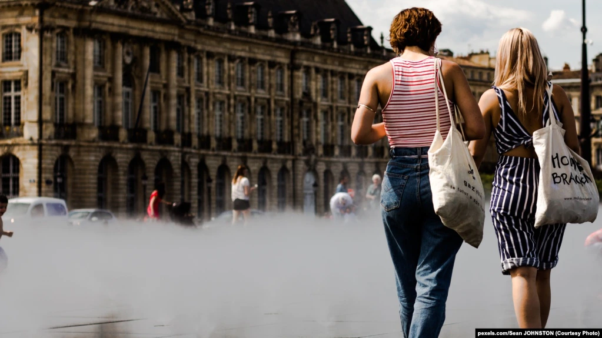
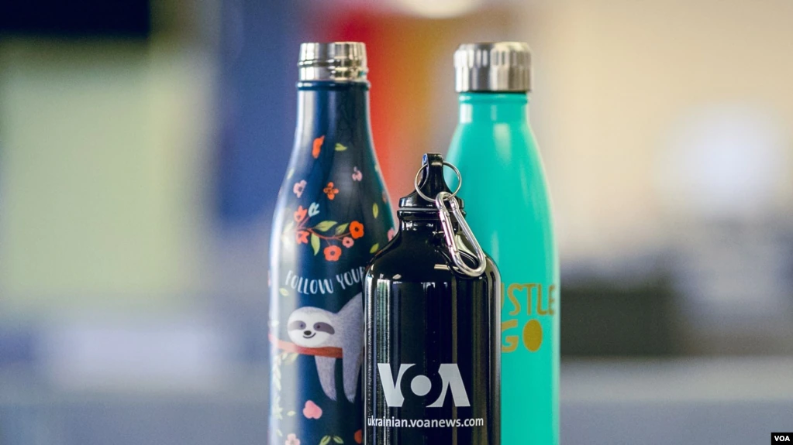
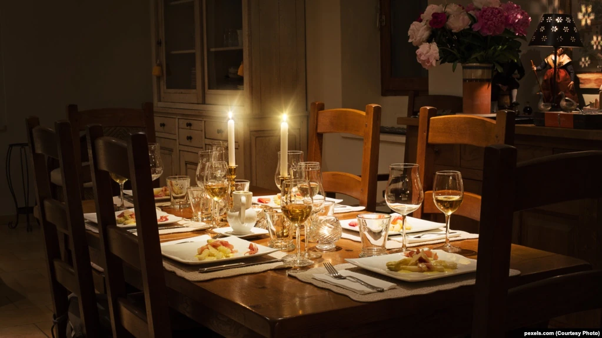
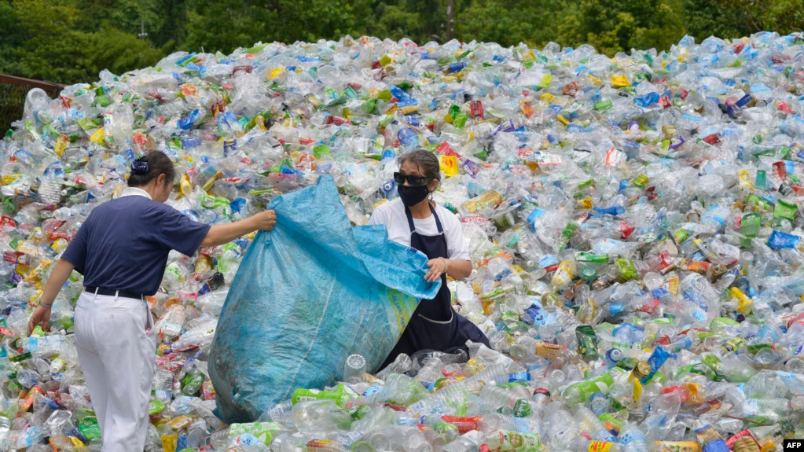

Що таке добро?
Поняття добра
Добро – це дуже важлива цінність, яку потрібно творити щодня. Бо допомагаючи комусь, ми перш за все допомагаємо собі боротися з поганим у своєму серці.
Добро – це міра, яка іде від чистого серця. Не говори про доброту, коли ти сам нею не сяєш, Коли у радощах витаєш, забувши про чужу біду. Бо доброта не тільки те, що обіймає тепле слово, В цім почутті така основа, яка з глибин душі росте.
Людина починається з добра
Мудрець сказав: живи, добро звершай Та нагород за це не вимагай. Лише в добро і вищу правду віра Людину відрізня від мавпи й звіра. Нехай ця істина стара: Людина починається з добра
Твори добро
Яким прекрасним могло б бути наше буття, якби кожна людина жила за таким правилом: “Поводься з іншими так, як би ти хотів щоб поводилися з тобою”. Тоді б зникли війни, сварки, вбивства, злочини,ворожнеча, помста – всі ті атрибути зла, які несуть людям знищення.
Види забруднень:
-
Механічні
це забруднення навколишнього середовища механічними відходами без хіміко-фізичних наслідків.
-
Хімічні
це зміна хімічних властивостей середовища, що спричиняє негативний вплив на екосистеми й техногенні системи.
-
Фізичні
це зміна фізичних параметрів навколишнього середовища, що призводить до негативних наслідків.
- 1. Температурно-енергетичне (теплове)
- 2. Світлове
- 3. Електромагнітне
- 4. Радіоактивне
- 5. Шумове Біологічні
- Це проникнення в екосистеми чи техногенні системи живих істот, ворожих певним співтовариствам.
7 простих порад, які допоможуть зберегти довкілля
1. Відмовитися від поліетиленових пакетів
За даними ООН, приблизно 5 трильйонів поліетиленових пакетів споживаються у світі щороку, або близько 10 мільйонів - щохвилини. Наразі, близько 60 країн світу почали боротьбу із пластиком на законодавчому рівні. І основним об’єктом цієї боротьби стали поліетиленові пакети, і, в певній мірі, пінопласт. Але боротьбу із поліетиленовими пакетами можна розпочати самостійно, просто зменшивши їх споживання. Наприклад, в магазині замість них можна використовувати багаторазові торбинки. Це не тільки зменшить кількість споживаного вами поліетилену, а й допоможе заощадити.
2. Відмовитися від одноразових пляшок та посуду
Лише 9 відсотків усіх пластикових відходів, які були коли-небудь вироблені, були перероблені.Пластикові пляшки, одноразовий посуд – ми зустрічаємося з цими одноразовими виробами кожного дня. І їх використання можна легко обмежити. Замість того, щоб купувати воду у пластикових пляшках, можна придбати пляшку багаторазового використання і носити воду з собою. Замість одноразового посуду – звичайний.
3. Бути енергоефективним у побуті
Відповідно до звіту Міжнародного енергетичного агентства, глобальні викиди вуглекислого газу при виробництві енергії у 2017 році зросли до 32,5 гігатонн, встановивши рекорд. А поліпшення світової енергетичної ефективності у 2017-му різко сповільнилося (глобальна енергоємність зросла лише на 1,7% в 2017 році, порівняно із середнім показником в 2,3% протягом останніх трьох років), відмічається у звіті.
Як берегти енергію у побуті? Існує безліч простих методів, які ще й дуже допоможуть заощадити. Наприклад, оптимальне освітлення. Вдень по-максимуму використовуйте ресурси природного світла. Коли вже вмикаєте світло ввечері, робіть це тільки там, де це необхідно (навіщо платити за освітлення цілої квартири, якщо ви знаходитесь тільки в одній кімнаті?). Використовуйте енергозберігаючі лампи – вони служать довше і споживають менше енергії, ніж звичайні. Особисто я восени та взимку ще люблю свічки – і електроенергію економить, і романтично.
5. Економити воду
Свіжа, чиста вода – це обмежений ресурс. 2.1 мільярди людей у світі не мають доступу до безпечної питної води, відповідно до даних Всесвітньої організації охорони здоров’я. Економити воду, насправді, не так важко. Замість ванни, можна прийняти душ. Поки я чищу зуби, я намагаюсь закривати воду. Вимикання води, поки ви чистите зуби два рази на день, може зберегти 30 літрів води на день – а це 900 літрів на місяць – повідомляє Агентство охорони довкілля США.
6. Купуйте менше та не викидайте
Досить часто стається так, що речі, які ми купуємо, стають нам невдовзі непотрібними. Що з ними робити? Викидати? Коли я переїхала до США, я помітила, що в спільній кімнаті з пральними машинами люди часто залишали непотрібні їм речі побуту або книги. А інші люді їх підбирали. На вулицю виставляють навіть непотрібні меблі - так моя родина позбавилась кількох стільців та тумби для ванної кімнати і стала власницею чудового крісла-гойдалки для балкону. Таким чином здійснюється “кругообіг речей в природі”, що зменшує кількість сміття.
7. Сортувати сміття і віддавати на переробку
Замість того, щоб скло, пластик та папір опиниляся на смітнику чи в океані, вони можуть бути перероблені на інші продукти. Для цього ми маємо сортувати відходи та викидати їх у спеціальні смітники для переробки. Віддавати на переробку можна такі речі як папір, батарейки, пластик, скло та багато іншого.
